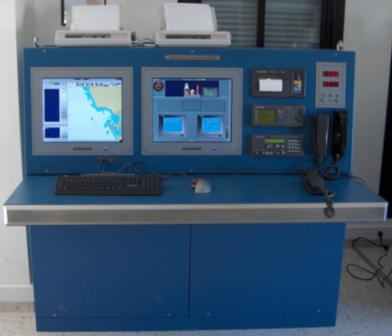

Introducción
En este Manual se detallan todas las funciones a las que el operador de un puesto de Alumno puede acceder.
La misión del puesto del alumno es, básicamente, proporcionar a éste todos los medios de comunicaciones propios de una estación de buque equipada para satisfacer los requerimientos del sistema GMDSS para las áreas A1, A2, A3 y A4.
